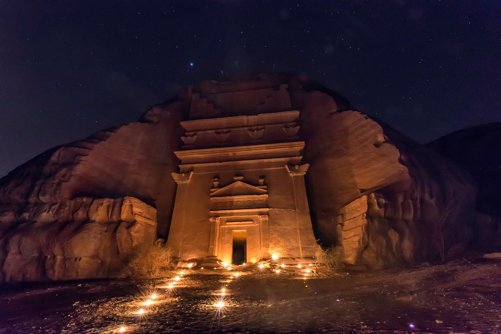
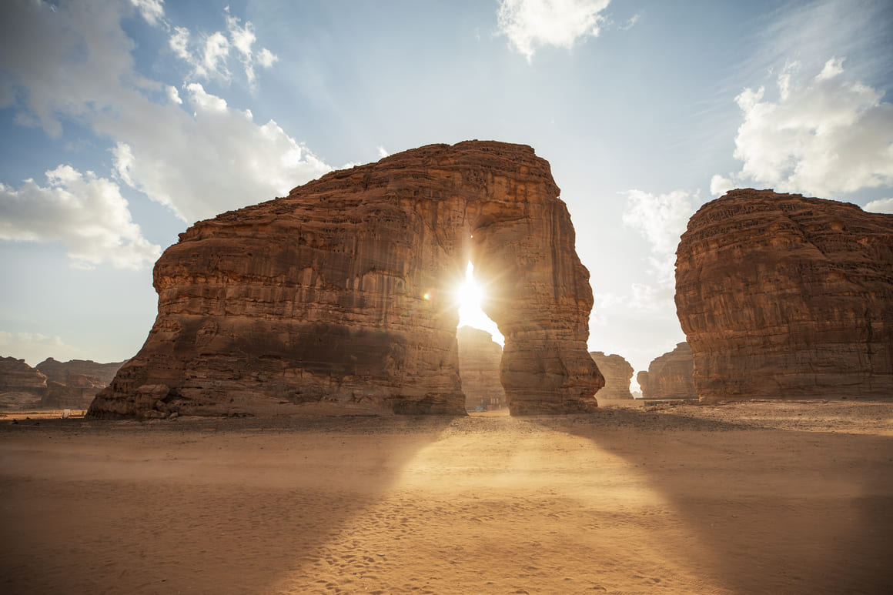
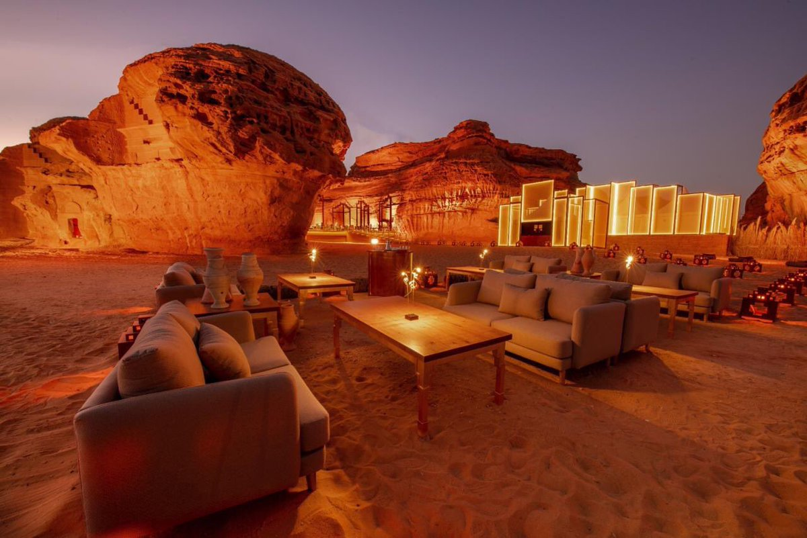

Al-'Ula, is a city of the Medina Region in north-western Saudi
Arabia. Historically located on the incense route, the city lies within
the Governorate of 'Ula, one of seven in the Medina Region, covering an
area of 29,261 square kilometres (11,298 sq mi).
The city is 110 km (68 mi) southwest of Tayma and 300 km (190 mi) north
of Medina. The city (municipality) covers 2,391 square kilometres (923
sq mi).
The population of the city is 5,426. Al-'Ula was the capital of the
ancient Lihyanites (Dedanites). The governorate contains the first
UNESCO World Heritage Site in the Saudi Kingdom, called Hegra (also
known as Al-Hijr, or Mada'in Saleh / Mada'in Salih), 22 km (14 mi) north
of the city. Hegra (Mada'in Salih) was built more than 2,000 years ago
by the Nabataeans. Al-'Ula, the ancient walled city, is packed with
mud-brick and stone houses.

Mada'in Salih, graet place and view also it has a history of 2000
years of existence, the mountains there are so beautiful and what
makes them more gorgeous and wonderful view is the inscription on
them.

The mountains in AlUla makes it wonderful place for the people who
love the mountains, the mountains there has a beautiful shape and
design.

The Saudi Government decide to take the advantage of AlUla and its
beautiful places there to make a great tourist destination.